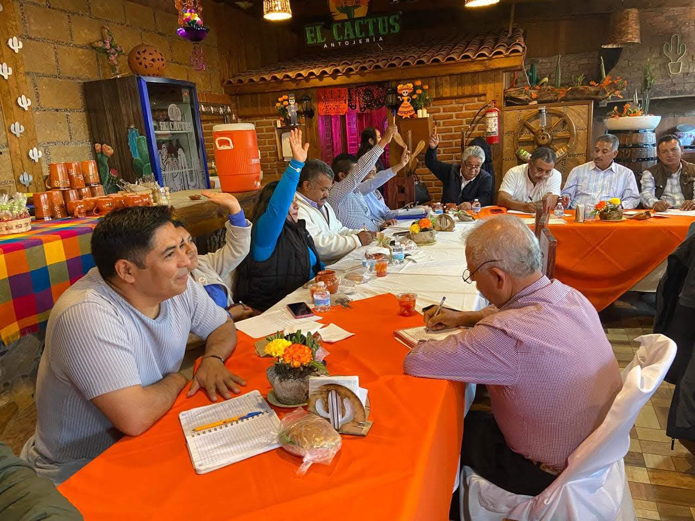

Asamblea General Ordinaria 2026
Se convoca a todos los trabajadores del H. Ayuntamiento de Molango de Escamilla a la Asamblea General Ordinaria que se celebrará el próximo viernes 24 de julio a las 10:00 horas en el salón de usos múltiples del sindicato. El orden del día incluye:
- Presentación del informe de actividades
- Revisión de cuentas
- Elección de comisiones